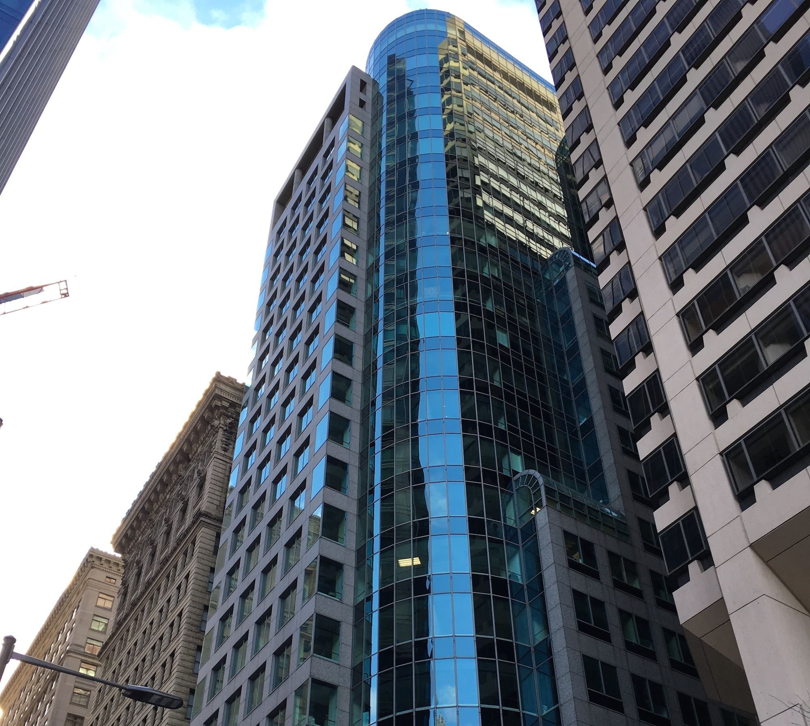

We are trial lawyers with expertise in personal injury, motor vehicle accidents, medical malpractice, product liability, worker's compensation, social security disability, real estate, bankruptcy, commercial litigation, corporate transactions, wills and estates. We also have substantial experience representing clients in transactional matters.
We have been serving the Greater Philadelphia area for over 50 years. We have successfully represented large corporations and individuals in cases involving millions of dollars. We do not charge for an initial consultation.
In the event you require legal representation, please call us at (215) 568-4500.
Our firm was established in 1962. Our attorneys have significant trial and appellate experience. The firm has represented Fortune 500 companies, small businesses, and thousands of individuals. We have successfully prosecuted cases ranging from mass torts to small claims in trial and appellate courts. We pride ourselves in providing personalized, cost effective and zealous advocacy for our clients. Our experienced and attentive staff have been with the firm for over 20 years. We have a proven track record of providing positive results for our clients.
